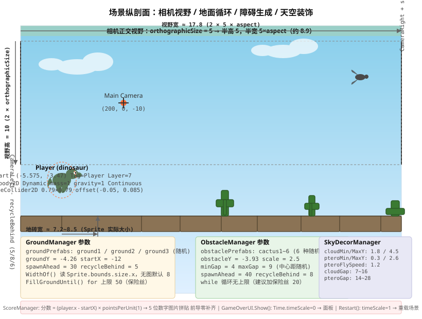

一句话玩法
按空格跳跃、躲避仙人掌与翼龙、看能跑多远。分数 = 跑出去的水平距离（米）。撞一下即死，点「重新开始」复活。
场景里只有十个活物体
| 名称 | 作用 | 关键组件 |
|---|---|---|
| Main Camera | 正交相机，Size 5，背景色 #314D79 | Camera、AudioListener、CamerFollow |
| ├─ day | 白天背景图，SortingOrder -10 | SpriteRenderer |
| GroundManager | 无限地面调度器 | GroundManager |
| ObstacleManager | 无限障碍调度器（仙人掌 6 种随机） | ObstacleManager |
| SkyDecorManager | 天空装饰：云朵 + 翼龙（纯视觉） | SkyDecorManager |
| Player (dinosaur) | 主角，Tag=Player，Layer=7 | Move、Rigidbody2D Dynamic、CapsuleCollider2D、Animator |
| Digit1~5 | 分数 UI，每位一个 Image，前导零补齐 | RectTransform、Image |
| ENDUI | 结束面板根节点 | GameOverUI、Button |
其余 Canvas/EventSystem 等标准 UI 基建略。
十二个脚本各管一段
| 脚本 | 行数 | 核心职责 |
|---|---|---|
| Move.cs | 84 | 角色控制：向右匀速跑、空格跳、落地检测、撞障碍触发结束 |
| GroundManager.cs | 140 | 地面调度：开局铺满、每帧回收左边、补右边，真正借/还交给 GroundPool |
| GroundPool.cs | 92 | 地面对象池：3 种地砖分仓库、复用不销毁、自动补 Rigidbody2D Static + BoxCollider2D |
| GroundTile.cs | 16 | 身份标签：记录来自哪个 prefab（0/1/2），回收时对号入座 |
| ObstacleManager.cs | 108 | 障碍调度：随机间距生成、回收、暂停时停刷，借/还交给 ObstaclePool |
| ObstaclePool.cs | 101 | 障碍对象池：Kinematic 刚体 + Trigger 碰撞体 + Obstacle 标记 |
| Obstacle.cs | 16 | 空标签：身上有这个脚本 = 这是障碍，Move 靠它识别 |
| ObstacleMark.cs | 16 | 身份标签：记录 prefab 下标，回收进正确仓库 |
| ScoreManager.cs | 100 | 计分：距离 × 系数，用 number0~9 图片拼数字，前导零补齐 |
| GameOverUI.cs | 69 | 结束界面：静态 Show() 暂停时间+显示面板，Restart 恢复时间+重载场景 |
| CamerFollow.cs | 47 | 相机跟随：只跟 X，Y/Z 固定，Lerp 平滑，跳跃不带镜头 |
| SkyDecorManager.cs | 182 | 天空装饰：云朵随机飘、翼龙扇翅膀+向左飞，复用简易对象池 |
场景纵剖面

一帧里的脚本流转

三个写对了的地方
1. 对象池「按种类分仓库」
GroundPool 与 ObstaclePool 都用 Queue<GameObject>[] warehouses，下标对应 prefabs 数组。借/还都带着 prefabIndex，复用时绝不串种——ground1 永远回 ground1 仓库，仙人掌 3 永远回仙人掌 3 仓库。这是对象池最容易踩的坑，这里规避了。
2. 物理层分工清晰
| 物体 | 刚体类型 | 碰撞体 | 用途 |
|---|---|---|---|
| 玩家 | Dynamic | CapsuleCollider2D（非 Trigger） | 受重力、能跳、能被地面托住 |
| 地面 | Static | BoxCollider2D（非 Trigger） | 不动但能被踩，EnsureCollider 自动按 Sprite 大小生成 |
| 障碍 | Kinematic | BoxCollider2D（Trigger） | 只检测重叠、不产生物理阻挡，SetupNewObstacle 自动配齐 |
代码里把「该加什么组件」封装在 EnsureCollider / SetupNewObstacle 里，忘了挂也没关系，首次借出时自动补全。
3. 只有玩家侧写碰撞判定
Obstacle.cs 是空类，真正的 OnTriggerEnter2D 写在 Move.cs 里：
void OnTriggerEnter2D(Collider2D other) {
if (other.GetComponent<Obstacle>() == null) return;
GameOverUI.Show();
}Trigger 碰撞双方都会收到事件，如果两边都写「游戏结束」，就会调用两次。统一由玩家侧处理，路径单一、好维护。
回头再看会皱眉的地方
① CamerFollow 用 Update 做 Lerp，未乘 Time.deltaTime
transform.position = Vector3.Lerp(transform.position, target, smooth);smooth 是常数（如 0.1），帧率高时跟得更紧、帧率低时更滞后。标准写法是 smooth * Time.deltaTime 或改用 FixedUpdate + 固定插值系数。跑酷游戏相机抖动体感明显，建议改成：
float t = 1f - Mathf.Pow(1f - smooth, Time.deltaTime * 60f);
transform.position = Vector3.Lerp(transform.position, target, t);这样在 60 FPS 下表现一致，其它帧率也自动补偿。
② Move.FixedUpdate 每帧强行覆盖水平速度
rb.velocity = new Vector2(runSpeed, rb.velocity.y);- 优点：永远匀速跑，手感硬朗
- 缺点：如果以后想加「冲刺 / 减速 / 被击退」，得先把这行改掉。更通用的写法是
rb.AddForce+ 限制maxSpeed，或用Mathf.MoveTowards平滑趋近。
③ CheckGround 射线只查 groundLayer，但地面预制体若忘设 Layer 就查不到
GroundPool.EnsureCollider 自动加了碰撞体，没自动设 Layer。Inspector 里得手动把 3 个 ground prefab 的 Layer 改成 Ground（或代码里 groundLayer 对应的层），否则 isGrounded 永远 false → 起不来跳。建议在 EnsureCollider 里顺手 tile.layer = LayerMask.NameToLayer("Ground")。
④ ScoreManager 用 GameObject.FindWithTag("Player") 每局只找一次还好，但若场景里有多个 Player 会抓错
可改成 Awake 里缓存 player = GameObject.FindWithTag("Player")?.transform，或提供 public Transform player 让 Inspector 直拖。
⑤ GameOverUI.Show() 里先 Time.timeScale = 0f 再开面板，顺序反了会闪一帧「还在跑」
代码里注释写了「顺序反了玩家会看到一帧『还在跑』」，实际实现已经是先暂停再开面板，这一点是对的。但 Restart() 里 Time.timeScale = 1f 放在 LoadScene 前是对的——重载后若不恢复，新场景继承 timeScale=0 直接卡死。
⑥ SkyDecorManager 里翼龙用 Time.deltaTime 移动，但 timeScale=0 时 deltaTime 也是 0，结束界面会自动停
代码里有注释说明这一点，实际上 MovePteros 里 float dx = -pteroFlySpeed * Time.deltaTime; 暂停时自然不动，不需要额外判断。这一点处理得很干净。
⑦ PterosaurFlap.OnEnable 里重置动画状态，配合对象池复用非常完美
对象池 SetActive(true) 时会触发 OnEnable，这里把 timer=0, wingsUp=true 再 ApplyFrame()，保证每次从池子拿出来都是「翅膀向上」的干净状态。这是对象池 + 动画配合的教科书式写法。
⑧ GroundManager.FillGroundUntil 里 for (int i=0; i<50; i++) 保险丝
万一 WidthOf 算成 0，x += w 不增、循环不退 → 死循环卡死编辑器。上限 50 是保命绳，但 50 这个魔数没解释，建议改成 const int MaxTilesPerFill = 50; 并注释「地砖最小宽度约 0.1，视野 30+ 最多铺 300 块，50 足够」。
⑨ ObstacleManager.SpawnAheadIfNeeded 用 while (nextSpawnX < rightNeed) 无上限
理论上 minGap=4, maxGap=9, spawnAhead=40，一次最多刷 10 个。但如果哪天把 minGap 改成 0.1，while 就会疯狂刷几百个障碍卡顿一帧。建议加个 int spawned = 0; while (...) { if (++spawned > 20) break; ... } 保险丝。
⑩ CamerFollow 类名少了个 a（应为 CameraFollow），文件名也是 CamerFollow.cs
Unity 要求类名与文件名一致，现在能挂上是因为两个都错成一样的。想改正必须：重命名文件 → 重命名类 → 场景里重新拖挂。初学阶段先别动，留个 TODO 备忘。
数值一览（均取自 Inspector / 代码默认值）
| 参数 | 值 | 备注 |
|---|---|---|
玩家 runSpeed | 6 | 世界单位/秒 |
玩家 jumpForce | 10 | 向上速度 |
玩家 checkDistance | 0.2 | 落地射线长度 |
相机 orthographicSize | 5 | 视野半高 = 5，半宽 = 5×aspect |
地面 groundY | -4.26 | 世界 Y |
地面 startX | -12 | 相机左边外 12 单位开始铺 |
地面 spawnAhead | 30 | 相机右边外再铺 30 |
地面 recycleBehind | 5 | 离相机左边 5 回收 |
障碍 obstacleY | -3.93 | 站在地面上稍高一点 |
障碍 scale | 2.5 | 原图偏小，统一放大 |
障碍 minGap/maxGap | 4 / 9 | 两障碍中心距随机区间 |
障碍 spawnAhead | 40 | 比地面多刷 10，保证先看到障碍 |
云朵 cloudMinY/MaxY | 1.8 / 4.5 | 天空随机高度 |
翼龙 pteroFlySpeed | 1.2 | 向左飞行速度 |
计分 pointsPerUnit | 1 | 每米 1 分 |
如果重做，我会改这三件事
- 把「速度锁死」改成「加速度趋近」这样后面想加「冲刺 / 沙地减速 / 被撞击退」只需改csharp
// FixedUpdate float targetVX = runSpeed; float currentVX = rb.velocity.x; float newVX = Mathf.MoveTowards(currentVX, targetVX, accel * Time.fixedDeltaTime); rb.velocity = new Vector2(newVX, rb.velocity.y);targetVX，不必重写速度赋值逻辑。
- 把相机跟随的
smooth换成帧率无关的指数平滑见「回头再看」第 ① 条，一行改动，手感在 30/60/144 FPS 下一致。
- 把「魔数保险丝」改成常量并加断言
MaxTilesPerFill = 50、MaxObstaclesPerSpawn = 20，并在Debug.Assert里把条件写明白，方便以后改参数时自测。
小结
这个项目是 Chrome 小恐龙的忠实复刻，代码量不大（12 个脚本共 868 行）但把 2D 无尽跑酷的核心骨架 全写齐了：
- 角色物理移动 + 落地检测
- 无限地面 / 障碍 / 装饰的 对象池 + 视野外回收 + 视野前生成
- 相机平滑跟随（只跟 X）
- 基于距离的计分 + 图片数字拼贴
- 静态
Show()一行触发结束 +timeScale=0暂停全局
最值得初学者抄作业的两个模式：
- 对象池按种类分仓库 + 身份标签组件（
GroundTile/ObstacleMark）自动回收 - 「只在玩家侧写碰撞判定」，障碍只做空标签，避免双向触发重复逻辑
把这两个模式记住，下次写任何「无限滚动」类 2D 游戏都能直接套用。